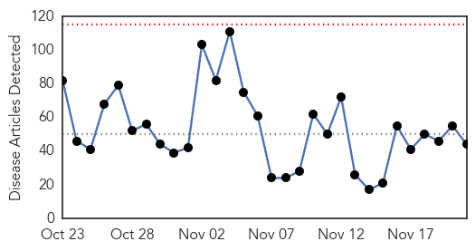
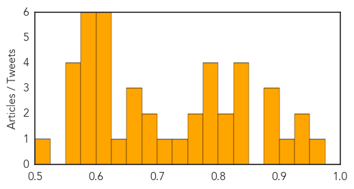
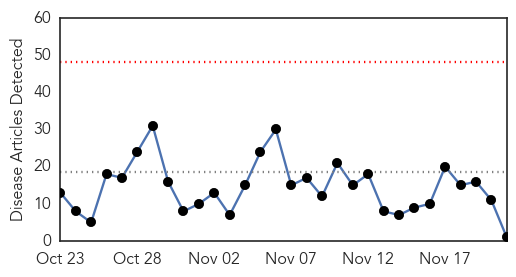
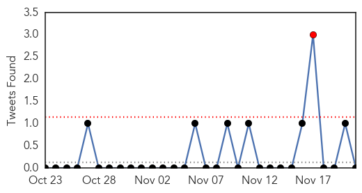
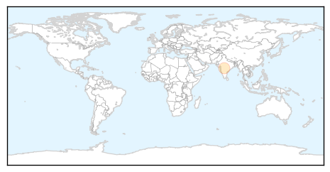

Unknown
30-Day Web Trend
0 alerts, 0 warnings

30-Day Twitter Trend
0 alerts, 0 warnings

Article Locations

Article Confidences
Top Articles:
- 0.952
- 838 sicked in 38 states resulting from salmonella outbreak in cucumbers, none in Tennessee. News Source
- 0.949
- Chipotle E. Coli Outbreak Now Reported in 6 States
- 0.935
- Chipotle E. Coli Outbreak Reaches Six States, Shares Tumble
- 0.902
- Chipotle E. coli outbreak reaches six states, shares tumble
- 0.899
- Feature: Laos' commitment to polio response after fatal case attracts international kudos - Xinhua
- 0.897
- Chipotle E. coli outbreak reaches six states, shares tumble
- 0.892
- UPDATE 4-Chipotle E. coli outbreak reaches six states, shares tumble
- 0.835
- Key dates in E. coli outbreak linked to Chipotle
- 0.831
- DE health officials discuss antibiotic resistance awareness
- 0.830
- Chipotle E. coli outbreak reaches six states, shares tumble
- 0.827
- Chipotle E. coli outbreak reaches six states, shares tumble
- 0.820
- Chipotle E. Coli Outbreak Spreads
- 0.817
- Chipotle E. coli outbreak now linked to illness in 6 states - KTVQ.com
- 0.796
- E. coli outbreak linked to Chipotle reaches California
- 0.782
- Key dates in E. coli outbreak linked to Chipotle
- 0.780
- Water disconnected at Zomba Central Hospital, patients, guardians helpless
- 0.780
- Chipotle E. Coli outbreak now linked to illness in 6 states
- 0.765
- Chipotle Mexican Grill, Inc (CMG) Stock Tumbles As E. Coli Hit Four Other States
- 0.760
- E. coli outbreak linked to Chipotle expands to 6 states
- 0.743
- E. coli Springs Up At Ohio Chipotle
- 0.714
- E. Coli Outbreak Linked to Chipotle Spreads to Six States, 40-Plus Cases : People.com
- 0.694
- CDC reports E. coli outbreaks linked to Chipotle in 6 states
- 0.688
- WBEN NewsRadio 930 : Buffalo & Niagara Falls, NY
- 0.673
- The number of people on Beaumont Hospital waiting lists shows why the place is overcrowded
- 0.669
- D.C. health department to track CRE in local facilities
- 0.659
- Limited Space Jeopardize Health Of Thousands In Malakal PoC Says MSF
- 0.627
- Chipotle’s Shares Take a Tumble as More Cases Reported in Other States
- 0.603
- Suspected Paris attacks scout arrested in Turkey
- 0.603
- Deadly suicide bombings target Cameroon's Far North
- 0.603
- Paris attacks do not pose ‘Charlie Hebdo’ dilemma for French Muslims
- 0.603
- French police extend detention of ‘unwitting’ host to Paris attack suspects
- 0.603
- Hasna Aitboulahcen, from ‘party girl’ to suspected terrorist
- 0.603
- Mashable profiles victims of Paris attacks in 140 characters
- 0.599
- The Chipotle E. Coli Outbreak Is Still Spreading
- 0.586
- E. coli outbreak linked to Chipotle expands to Ohio
- 0.583
- Contributing Op-Ed Writer: Are Good Doctors Bad for Your Health?
- 0.580
- Those with Rheumatoid Arthritis More Likely to Die Early
- 0.580
- Inverloch Cheddar Cheese recalled over listeria fears
- 0.579
- Greeley police probe sepsis tattoo death, but have not launched criminal investigation
- 0.567
- Finally: Malawi government to recruit newly graduated doctors
- 0.557
- E. coli outbreak linked to Chipotle expands to six states - Times-Gazette
- 0.553
- APS warns of possible norovirus outbreak at Comanche Elementary
- 0.550
- Workers in public hospitals stage peaceful demo, asks parliament to intervene
- 0.511
- Further need to improve patient safety
Top Tweets:
- 0.806
- Si disfrutas la música, estudias música y trabajas de músico, en un momento te verás sábado AM viajando a Mayagüez a tocar. @LaRespuestaENT
- 0.796
- Esa gente que dice mimir en vez de dormir,que tarados!
- 0.749
- RT: Veo las noticias que aparecen en el TL y siento que está pasando de todo un poco. Qué loquera.
- 0.748
- Y la gente que dice dispertar en vez de despertar,debe ser que tuvo pesadillas
- 0.685
- RT: En francia en 5 días descubrieron al autor del atentado y nosotros todavía no sabemos cómo Nisman se tropezó de jeta en una b…
- 0.643
- RT: No Rechacen tanto al Amor. Porque va a llegar el día en que realmente lo necesiten y no van tener quien se los de. Y ahí …
- 0.620
- RT: El mensaje de "buen día" de la persona indicada te asegura 24 horas de buen humor.
- 0.583
- Saudis report a MERS death today. November has been a light month for MERS - only 3 cases. https://t.co/bzpWcRqsb9
- 0.563
- RT: GARANTIZADO: Quieres tener miles de seguidores en menos de un minuto! Dale un toque AQUI: https://t.co/DA1IBDpetC
- 0.548
- RT: Se acerca la Navidad, ¿no te has preguntado alguna vez cómo dicen Feliz Navidad o Feliz Año Nuevo en otros países? ht…
- 0.519
- RT: Buen d√≠aüëåHay un poder q se abre paso lentamente, sin ruido, sencillamente. Un poder que se ejerce de dentro hacia afuera. El pod‚Ķ
- 0.517
- RT: Nadie sabe el poder del amor que tiene en su vida hasta que se enamora de verdad.
Influenza
30-Day Web Trend
0 alerts, 0 warnings

30-Day Twitter Trend
1 alerts, 0 warnings

Article Locations
Article Confidences

Top Articles:
Top Tweets:
-
No tweets found for Nov 21, 2015